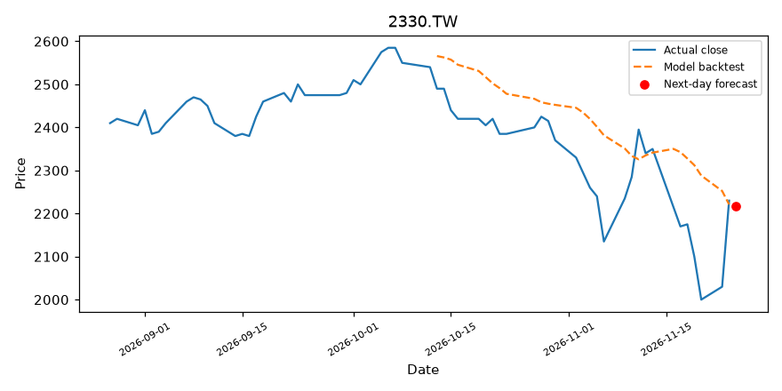
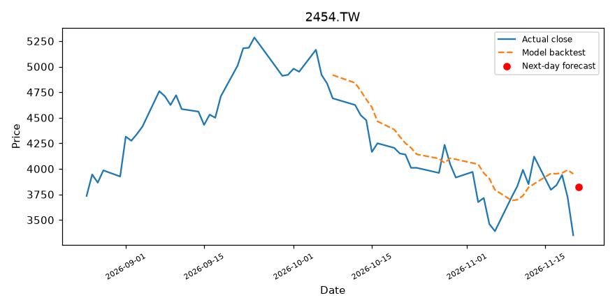
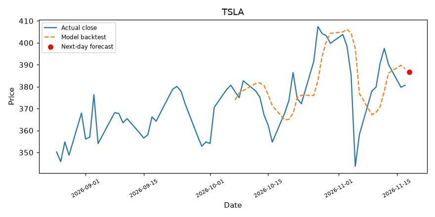
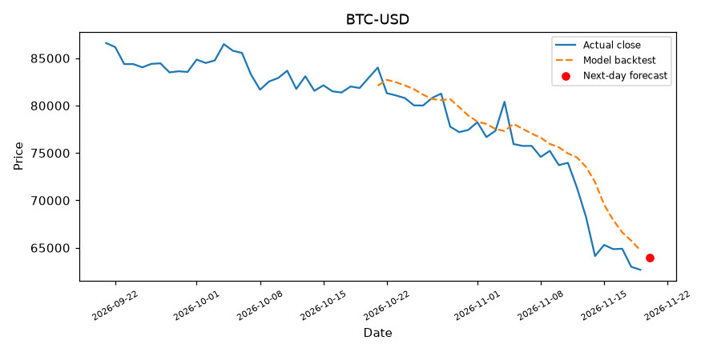

元大台灣50 0050.TW
最新收盤95.70
明日預測93.76
預測變動-2.03%
訊號📉 偏空

新聞情緒 偏多 🟢
（12 則，分數 +0.17）
- 0050反1爆近4千萬違約交割！投資達人看傻：明明當天大漲 - ETtoday財經雲
- 0050開盤就漲停 ! 網友崩潰錯過低點 釣出內行人教一招 - 自由財經
- 0050昨才亮燈漲停！今隨台股暴跌 盤中重挫近10% - TVBS新聞
- 台股愈震愈買！0050投資人數突破400萬大關創高 不到半年增逾百萬 - 鉅亨網
台積電 2330.TW
最新收盤2230.00
明日預測2217.47
預測變動-0.56%
訊號📉 偏空

新聞情緒 中性 ⚪
（12 則，分數 -0.08）
- 股災還沒完？台指期夜盤跌1343點 美股盤前台積電ADR跌近5％ 專家建議拉高現金部位、降低槓桿 - 自由財經
- 台積電亞利桑那廠12/4辦擴建典禮 2奈米考慮落腳德州 - Rti 中央廣播電臺
- 台積電變臉、外資一夕變苦主！昨賺3.6兆全吐光 還倒貼800億元 - Yahoo股市
- 竹科女工程師控遭孤立霸凌…被踢出台積電會議 全公司加薪獨漏她怒告 - UDN
鴻海 2317.TW
最新收盤226.50
明日預測217.41
預測變動-4.01%
訊號📉 偏空

新聞情緒 中性 ⚪
（12 則，分數 +0.00）
- 鴻海崩7%、聯發科挫6%！台積電大跌140元至2090元 台股開低暴跌2061點跌破39000點大關 - Yahoo股市
- 86檔「黃仁勳概念股」紅通通 台積電鴻海緯創65檔飆漲停 - Yahoo股市
- 鴻海印度子公司遭聲請破產！彭博爆供應商討4.8億 集團反擊 - ETtoday財經雲
- 鴻海也挫跌停...「最大苦主」郭台銘身價原地蒸發391億元 - Yahoo股市
聯發科 2454.TW
最新收盤4050.00
明日預測3893.65
預測變動-3.86%
訊號📉 偏空

新聞情緒 中性 ⚪
（12 則，分數 -0.08）
- 世芯-KY、聯發科雙漲停！創意卻跌逾5% 背後原因曝 - ETtoday財經雲
- IC設計大洗牌！世芯、聯發科雙漲停 創意重挫5%失守股后 - 聚財網
- 郭明錤爆Google砍博通百萬顆TPU 聯發科受惠？ - MoneyDJ
- 聯發科2027年不出手機旗艦SoC？ 官方闢謠：一定登場 - DIGITIMES
輝達 NVDA
最新收盤148.10
明日預測153.28
預測變動+3.50%
訊號📈 偏多

新聞情緒 中性 ⚪
（12 則，分數 +0.08）
- Tech stock sell-off deepens as AI fears outweigh Huang’s Nvidia return - CNN
- CoreWeave, Nvidia Credit Risk Hit Fresh Highs as AI Woes Mount - Bloomberg.com
- Colette Kress Scored a Win Worth Millions From Huang’s Return to Nvidia - Barron's
- Why Trump wanted Jensen Huang back at the helm of Nvidia - Yahoo Finance
特斯拉 TSLA
最新收盤379.00
明日預測375.52
預測變動-0.92%
訊號📉 偏空

新聞情緒 偏空 🔴
（12 則，分數 -0.17）
- Tesla’s FSD Push In Europe Hits Another Snag As EU Reportedly Delays Approval Talks Yet Again – TSLA Stock Falls Premarket - Yahoo Finance
- Calls for change after woman is injured in Tesla crash during Arlington test drive - WTOP News
- Musk says Tesla self-driving makes seniors safer, but its fine print says they must watch the road - Fortune
- Seniors embrace Tesla automated driving technology despite questions about safety - NPR
超微 AMD
最新收盤401.47
明日預測433.08
預測變動+7.87%
訊號📈 偏多

新聞情緒 中性 ⚪
（12 則，分數 +0.00）
- Nvidia, AMD, and Micron stocks sink as investors flee AI trade - Yahoo Finance
- AMD Stock Would Need to Rise About 57% to Get Back to Its Record. History Says How Long Past Comebacks Took. - Yahoo Finance
- What Is Going on With AMD Stock on Wednesday? - Benzinga
- AMD Stock Shows the Market Has Stopped Making Sense After Huang’s Dramatic Return - Barron's
比特幣 BTC-USD
最新收盤59689.03
明日預測60772.44
預測變動+1.82%
訊號📈 偏多

新聞情緒 偏空 🔴
（12 則，分數 -0.25）
- 【美股盤前】納指期貨跌逾1%，英偉達、黃金、比特幣齊跌，反彈能否持續？ 作者 Investing.com - Investing.com 香港 - 股市報價& 財經新聞
- 幣安遭駭僅是導火線！21Shares 拆解比特幣深跌主因：需求減弱與 58 億美元連環爆倉 - 桑幣區識 Zombit
- 比特幣在 Kraken 短暫跌至 1.7 萬美元，交易所維持交易有效 - TradingView
- 以為永遠遺失的比特幣竟復活了！近萬個休眠地址八年後重啟轉帳，累計轉出 24.5 萬枚 BTC - 動區動趨
以太幣 ETH-USD
最新收盤1679.81
明日預測1706.34
預測變動+1.58%
訊號📈 偏多

新聞情緒 中性 ⚪
（12 則，分數 -0.08）
- 美擬擴大關稅衝擊市場 以太幣摜破1700美元創波段新低 - Yahoo股市
- Bitmine 再買 7,819 枚 ETH！總持倉突破 608 萬枚，86% 質押賺取 2.45 億鎂年化收益 - 動區動趨
- 美擬擴大關稅衝擊市場 以太幣摜破1700美元創波段新低 - 商傳媒
- Bit Digital 拋售近3萬枚以太幣 償還 Galaxy 借款5,000萬美元、槓桿減半 - BigGo 財經